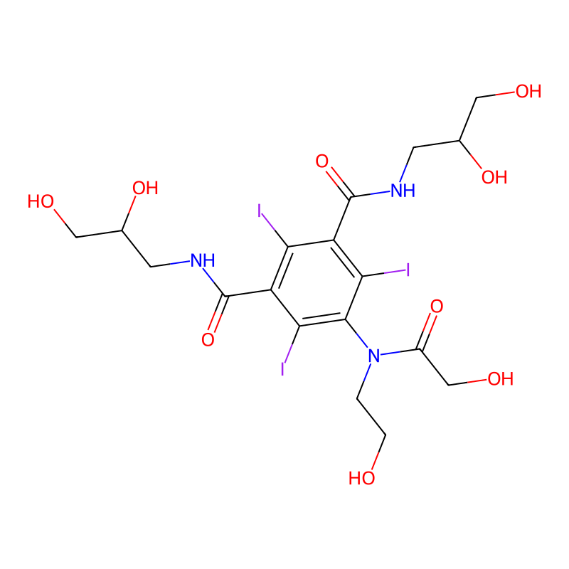
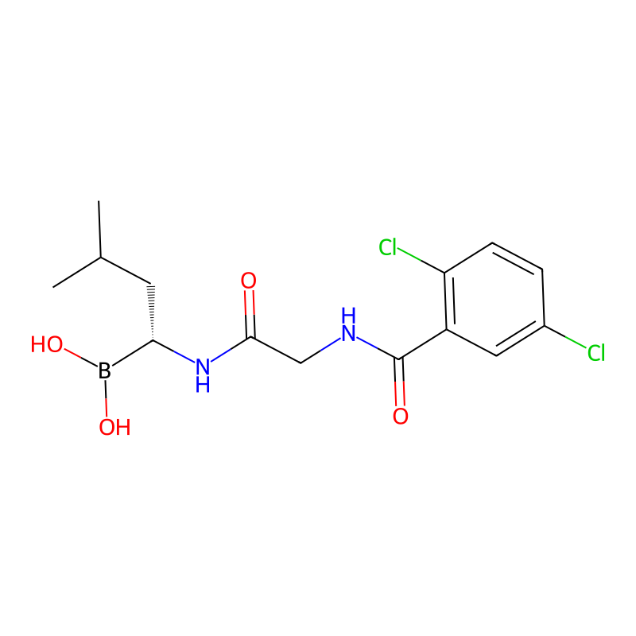
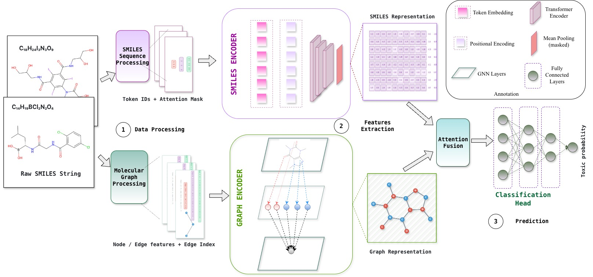
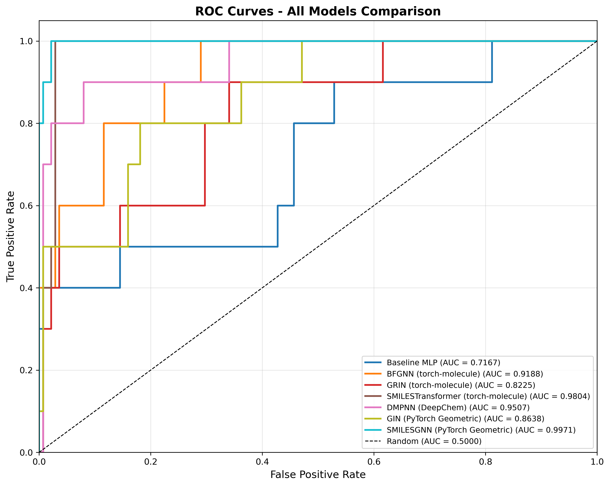
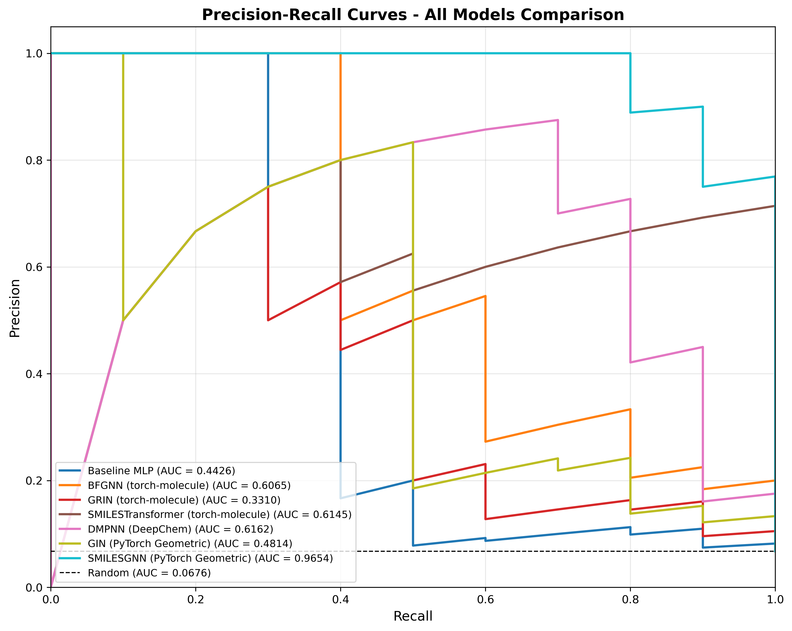
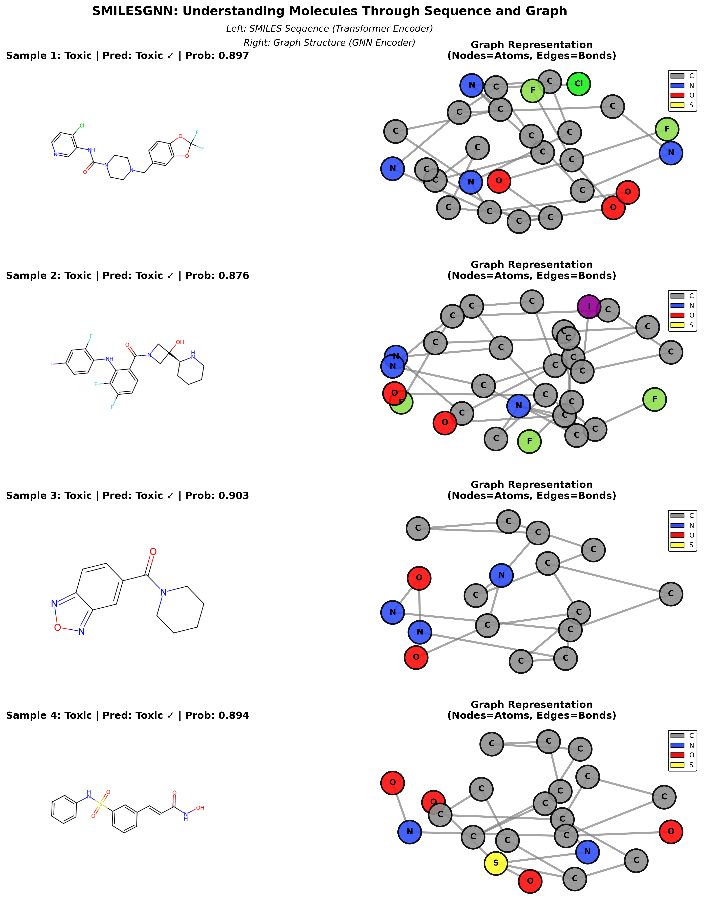
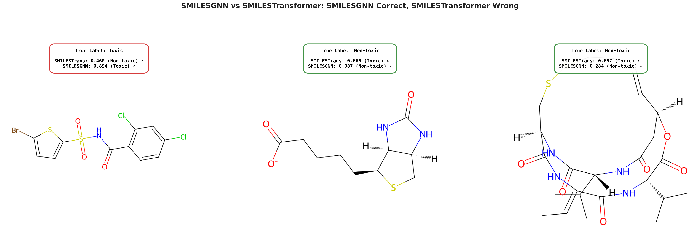

A dual-pathway deep learning architecture that unifies sequence-based and graph-based molecular representations through dynamic cross-attention fusion for accurate, interpretable drug toxicity screening.
National Economics University · VNU University of Science, Hanoi, Vietnam
✉ nghiant@neu.edu.vn
Clinical drug toxicity prediction is a critical challenge in pharmaceutical research, as toxicity failures are a major cause of drug candidate attrition during clinical trials. This paper presents SMILESGNN, a multimodal deep learning architecture that combines sequence-based and graph-based molecular representations through dynamic attention weighting. SMILESGNN processes molecules via dual pathways: a Transformer encoder captures sequential patterns from SMILES strings, while a Graph Attention Network (GATv2) encoder extracts local structural information from molecular graphs. An attention-based fusion module adaptively learns which representation is more informative for each molecule. Evaluated on the ClinTox dataset with severe class imbalance, SMILESGNN achieves state-of-the-art performance with AUC-ROC of 0.997, F1 score of 0.870, and accuracy of 0.980, significantly outperforming single-modality baselines and correctly identifying three additional toxic compounds missed by the best sequence-only model.
Toxicity-related failures are the leading cause of drug candidate attrition during clinical development, carrying enormous financial and human costs. Yet predicting whether a molecule will be toxic from its structure alone presents three intertwined challenges that existing methods struggle to solve simultaneously.
Existing approaches process molecules as either graph structures (GNNs) or token sequences (Transformers on SMILES), never both simultaneously. This is a fundamental limitation: the two representations capture complementary information. Graphs excel at explicit atomic connectivity and local motifs; sequences capture bond order, ring closures, and global molecular patterns such as aromaticity. SMILESGNN is the first architecture to fully integrate both through a learnable, per-molecule attention mechanism.
The ClinTox dataset from MoleculeNet comprises 1,480 drug-like molecules with binary labels indicating whether each compound failed clinical trials due to toxicity (CT_TOX task). It presents a benchmark scenario with pronounced class imbalance: 1,089 non-toxic versus 95 toxic compounds in the training split.
Critically, all experiments use scaffold-based splitting (80% / 10% / 10%, seed=42). Scaffold splitting groups molecules by their core ring structure, ensuring that structurally related compounds stay in the same partition. This is far more rigorous than random splitting, and directly tests whether a model generalises to novel chemical scaffolds — the real challenge in drug discovery.
The following two molecules from the dataset illustrate the core difficulty: despite comparable structural complexity and molecular weight, one is an FDA-approved non-toxic drug and the other failed clinical trials due to toxicity concerns.


SMILESGNN processes each molecule simultaneously through two independent encoding pathways, then fuses the representations via a learnable cross-attention mechanism before making a binary toxicity prediction.

Handling the 11.5:1 class imbalance requires a coordinated approach rather than a single trick. SMILESGNN uses Focal Loss to focus learning on hard examples:
Focal Loss reduces the loss contribution from easy negative (non-toxic) examples, forcing the model to concentrate on correctly classifying the rare toxic minority. This is combined with a weighted sampler that ensures each training batch contains equal numbers of toxic and non-toxic molecules, and strong regularisation (Dropout 0.4 + AdamW weight decay 10⁻⁴). Early stopping monitors validation F1 score with patience of 15 epochs to prevent overfitting on the small toxic class.
SMILESGNN is evaluated against seven baseline models on the held-out ClinTox test set (148 compounds) using scaffold-based splitting. The comparison spans traditional fingerprints, multiple GNN architectures, and a state-of-the-art SMILES Transformer.
| Model | AUC-ROC | Accuracy | F1 | AUPRC |
|---|---|---|---|---|
| Baseline MLP Morgan FP | 0.717 | 0.939 | 0.471 | 0.450 |
| GRIN torch-molecule | 0.823 | 0.946 | 0.429 | 0.379 |
| GIN PyTorch Geometric | 0.864 | 0.953 | 0.588 | 0.503 |
| GATv2* PyTorch Geometric | 0.885 | 0.892 | 0.385 | 0.466 |
| DMPNN DeepChem | 0.886 | 0.867 | 0.333 | 0.596 |
| BFGNN torch-molecule | 0.919 | 0.939 | 0.182 | 0.616 |
| SMILESTransformer* torch-molecule | 0.980 | 0.966 | 0.783 | 0.665 |
| 🏆 SMILESGNN (Ours) | 0.997 | 0.980 | 0.870 | 0.967 |
* GATv2 and SMILESTransformer serve as single-modality ablation components. All models evaluated on the same 148-sample scaffold-split test set.
The results reveal a critical pattern in graph-only models: high AUC-ROC but low F1 score. BFGNN achieves AUC-ROC 0.919 but F1 of only 0.182 — it ranks toxic compounds well but fails to commit to predicting them. This trade-off is unacceptable in toxicity screening, where missing a toxic compound carries far greater consequences than a false positive. SMILESGNN achieves both superior ranking and minority-class recall simultaneously.


A toxicity prediction model is only useful in practice if researchers can understand why it makes a given prediction. SMILESGNN introduces a SMILES-Graph visualisation framework that renders the dual representation for each molecule side-by-side: the SMILES sequence on the left and the atom-bond graph on the right.
This dual view directly corresponds to the two encoding pathways inside the model and makes explicit which structural features are available to each encoder. The cross-attention fusion module then dynamically decides how to weight these complementary views for the final prediction.

As a concrete example, the toxic compound C₁₄H₁₉BCl₂N₂O₄ (Figure 1b) exhibits toxicity-relevant structural features captured primarily by the graph encoder: a boronic acid functional group (reactive electrophile), a chiral centre, and a 2,5-dichlorinated aromatic ring (associated with off-target reactivity). The attention-based fusion module dynamically up-weights the graph pathway for this molecule, while emphasising the SMILES pathway for simpler linear-chain compounds where sequential bond-order patterns are the dominant signal.
SMILESGNN and SMILESTransformer agree on 142 of 148 test compounds. The six disagreements reveal exactly where the graph pathway adds value: SMILESGNN correctly identifies three additional toxic compounds that SMILESTransformer misclassifies as non-toxic.

These cases share a common theme: the toxicity signal lies in explicit local structural motifs — reactive functional groups, unusual ring systems, and specific atom combinations — that the SMILES sequence representation encodes implicitly through character patterns, but that the molecular graph encodes explicitly through atom-level connectivity. The cross-attention fusion module learns to up-weight graph features precisely in these cases, demonstrating that the two representations are genuinely complementary rather than redundant.
SMILESGNN demonstrates that principled multimodal fusion of SMILES sequences and molecular graphs outperforms both single-modality approaches on the challenging task of clinical toxicity prediction. The key insight is not simply that more information helps, but that the two representations capture structurally different information — and that a learnable cross-attention mechanism can discover, per molecule, which view is most informative.
The model achieves state-of-the-art results on ClinTox (AUC-ROC 0.997, AUPRC 0.967, F1 0.870) while maintaining interpretability through the SMILES-Graph visualisation framework — a combination that is essential for real-world deployment in pharmaceutical screening.